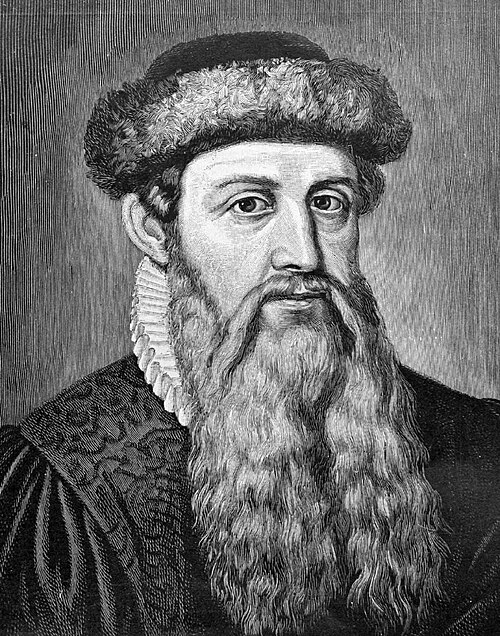

#Johannes Gutenberg Johannes Gensfleisch zur Laden zum Gutenberg
Tư tưởng / đóng góp chính
Đóng góp của ông không phải ý niệm chữ rời — CH06-CE11-05 đã có bốn thế kỷ trước — mà là một hệ thống công nghệ khớp nhau: khuôn đúc điều chỉnh được cho phép làm hàng nghìn con chữ đồng dạng, hợp kim chì – thiếc – antimon đủ cứng mà đúc được ở nhiệt độ thấp, mực gốc dầu bám được lên kim loại, và máy ép phỏng theo máy ép nho. Bảng chữ cái Latinh chỉ vài chục ký tự làm phép này có lợi về kinh tế, chỗ mà chữ Hán không có. Bản Kinh Thánh 42 dòng k. 1455 là chứng minh thương mại của hệ ấy.
Vì sao chọn
Ứng viên cùng ô là Laurens Coster, người Haarlem mà truyền thống Hà Lan quy công, và Johann Fust, chủ nợ rồi đối tác của ông. Coster bị loại vì không có bằng chứng văn bản đứng được. Fust bị loại theo tính nguyên bản (c): ông cấp vốn và phát hành. Gutenberg được chọn theo (c) và counterfactual (d): cái mới là tổ hợp năm kỹ thuật, và nó làm nhân bản văn bản rẻ đi hai bậc độ lớn.
Kế thừa từ
- Tất Thăng CH06-CE11-05 tương đồng độc lập suy đoán học giả
- Nghề kim hoàn và đúc khuôn ở Rhineland kế thừa qua trường phái
- Nghề khắc ván in và làm giấy ở châu Âu thế kỷ 14 kế thừa qua trường phái
Ảnh hưởng tới
- Martin Luther CH07-CE16-01 kế thừa qua trường phái
- Thị trường sách và nghề xuất bản châu Âu kế thừa qua trường phái
- Chuẩn hoá chính tả các ngôn ngữ bản ngữ châu Âu kế thừa suy đoán học giả
Được ghi là nguồn kế thừa bởi (tự động từ dữ liệu)
- Martin Luther CH07-CE16-01 kế thừa qua trường phái
Nguồn
Elizabeth L. Eisenstein, The Printing Press as an Agent of Change (Cambridge University Press, 1979); bản Kinh Thánh 42 dòng, Mainz, k. 1455.